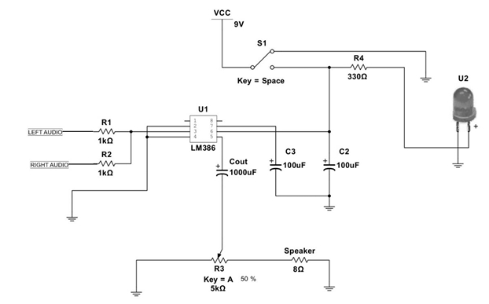
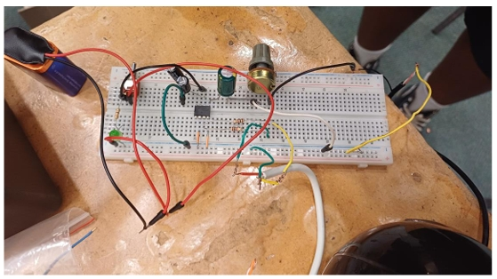
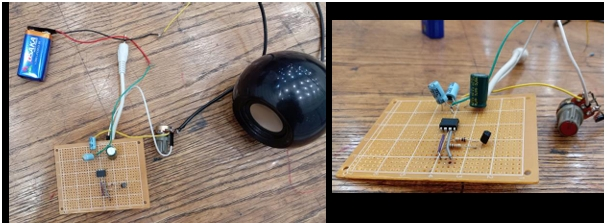
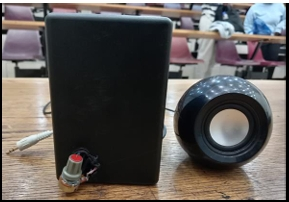

A six-stage transistor amplifier that takes a weak signal from a cellphone's headphone jack, buffers and boosts it through a common-collector stage and an LM386 IC, then drives a speaker with adjustable volume control.
Overview
Amplified audio is essential for things like playing music to a group, making announcements, or boosting voice communication — but a phone or human voice alone can't drive a speaker directly; the signal is far too weak. This project solves that with a transistor amplifier circuit built around the LM386, a low-voltage audio amplifier IC that delivers solid gain with very few external components.
The signal is captured from a cellphone via a 3.5 mm aux cable, switched on through a simple SPDT power control, buffered by a common-collector (2N3904) stage for clean impedance matching, amplified by the LM386, passed through a potentiometer for manual volume control, and finally delivered to a 4Ω speaker.
Signal Flow
System Components
Captures the weak audio signal directly from the cellphone's headphone port, serving as the input to the amplifier system.
A simple ON/OFF switch integrated into the circuit to safely control power delivery to the amplifier.
Configured as a common-collector (emitter-follower) buffer, providing high input impedance so the phone's signal isn't loaded down, while delivering the low output impedance the LM386 needs to be driven efficiently.
The core amplification stage — boosts the buffered signal from the millivolt range up to a level strong enough to drive the loudspeaker without significant distortion.
Acts as a variable resistor at the amplifier's output, letting the user manually adjust the loudness of the speaker.
Converts the amplified electrical signal back into audible sound, completing the signal chain.
Circuit Design & Final Prototype
Circuit schematic verified through Multisim simulation and SMath Studio calculations before physical construction.

Breadboard prototype, internal PCB build, and the final enclosed amplifier.



My Contribution
This was a two-person project with Munyai S. My contribution covered the Audio Input Stage (3.5mm jack interfacing), the Power Control stage (ON/OFF switch), and the Input Buffer stage — a common-collector (emitter-follower) configuration built around a 2N3904 transistor, giving the circuit high input impedance so the phone's output isn't loaded down, while delivering the low output impedance the LM386 needs to be driven cleanly. Munyai S built the Audio Amplification (LM386), Volume Control, and Output (Speaker) stages.
Together, we verified the design using Multisim for circuit simulation and SMath Studio for the supporting calculations before moving to breadboard construction.
Technical Challenges & Fixes
Results & Demo
Calculated values compared against simulated and measured results.
| Parameter | Calculated | Simulated | Measured |
|---|---|---|---|
| fc (cutoff frequency) | 19.894 Hz | — | — |
| Xc (capacitive reactance) | 8 Ω | — | — |
| Vin (RMS) | 48.2 mV | 48.2 mV | 32.4 mV |
| Vspeaker (RMS) | 0.964 V | 1.2 V | 0.76 V |
| Ispeaker (RMS) | 241 mA | — | 183.2 mA |
Documentation